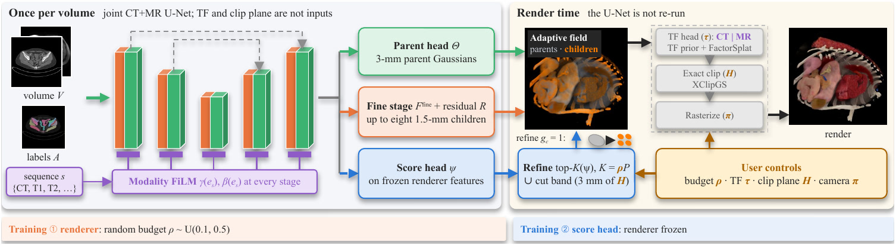
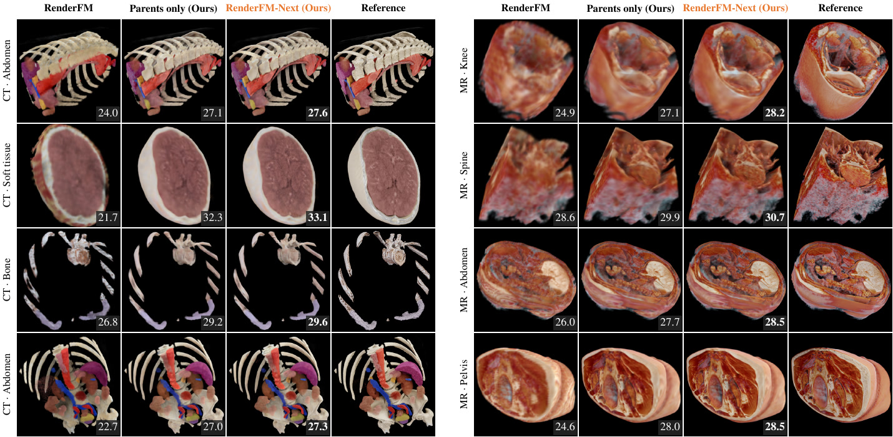

A whole-body CT and a whole-body MR scan from the test set, each turned into Gaussians by one forward pass of the same network. Every frame, transfer-function switch and clipping-plane move in the video is rendered from those Gaussians, with no fitting to the scan.
Path-traced rendering shows CT and MR volumes with realistic lighting, but it restarts after every change of view, clipping plane or transfer function (TF), the map from voxel intensity to colour and opacity, which limits the frame rate. Feed-forward Gaussian splatting models such as Render-FM predict the Gaussians directly from the volume instead of fitting them to each scan, and are fast. Render-FM, however, handles only CT, runs its network again after every TF edit, has no clipping operator, and places its Gaussians on a uniform 3-mm grid that blurs organ boundaries and cut faces.
We present RenderFM-Next, a feed-forward model that addresses these limits. One network handles both CT and MR. Its Gaussians are predicted once per volume: a new TF needs no pass of this network, and a clipping plane cuts them exactly, using operators from prior work. The model predicts coarse 3-mm Gaussians for the whole volume and refines them to 1.5 mm only where refinement improves the image. A small score head ranks the coarse Gaussians by how much refining them would reduce the rendering error; at render time the user chooses how many are refined, and those next to a clipping plane are always refined, which sharpens cut faces.
We build a benchmark of about 2,000 CT and MR scans with path-traced references under clinical presets, TF edits and clipping. RenderFM-Next improves over Render-FM retrained on this benchmark by 2.8 dB on CT and 2.4 dB on MR and renders a 1600×1600 view in 4–6 ms. Refinement adds 0.30 / 0.69 dB over the same model trained without it (0.51 / 1.17 dB on cut faces), and refining a learned 10% of the coarse Gaussians matches a random 50% with 2.4× fewer Gaussians.
Once per volume, one U-Net for CT and MR predicts 3-mm parent Gaussians, up to eight 1.5-mm children per parent, and a score that ranks the parents. At render time the network is not run again: the top-ranked parents under the budget, and those next to the clipping plane, are replaced by their children.

The same weights serve both modalities. The transfer function and the clipping plane are not network inputs, so editing either never re-runs the U-Net.
A small score head ranks coarse Gaussians by how much refining them would reduce the rendering error. The user sets the budget at render time.
A light TF head recolours the same Gaussians, and an exact clipping operator cuts them. Gaussians next to the plane are always refined, which sharpens cut faces.
Test set: 67 CT and 115 MR patients, with path-traced references under the base TF, clinical presets, TF edits and clipping. PSNR in dB, per-patient mean.
| Method | All reported families | PSNR↑ by family | #G (M) | FPS↑ | ||||||
|---|---|---|---|---|---|---|---|---|---|---|
| PSNR↑ | SSIM↑ | LPIPS↓ | Base uncut | Base clipped | Clinical presets | Preset + edit | ||||
| CT | Render-FM (retrained) | 26.87 | 0.936 | 0.085 | 26.91 | 27.25 | 25.72 | 26.32 | 0.35 | 99 |
| Ours (parents only) | 29.39 | 0.948 | 0.068 | 29.96 | 29.69 | 27.32 | 28.98 | 0.35 | 225 | |
| Ours (joint) | 29.69 | 0.951 | 0.057 | 30.31 | 30.05 | 27.42 | 28.95 | 0.89 | 162 | |
| Ours (CT specialist) | 29.80 | 0.952 | 0.056 | 30.41 | 30.20 | 27.53 | 28.85 | 0.90 | 163 | |
| MR | Render-FM (retrained) | 26.25 | 0.921 | 0.148 | 26.74 | 25.56 | 28.40 | 26.78 | 0.17 | 159 |
| Ours (parents only) | 27.95 | 0.932 | 0.126 | 28.71 | 27.27 | 28.79 | 27.50 | 0.17 | 350 | |
| Ours (joint) | 28.63 | 0.939 | 0.107 | 29.23 | 28.11 | 29.31 | 28.13 | 0.42 | 229 | |
| Ours (MR specialist) | 28.93 | 0.940 | 0.107 | 29.55 | 28.38 | 29.55 | 28.44 | 0.41 | 224 | |
Render-FM is retrained on this benchmark, one model per modality. Ours = RenderFM-Next. Parents only: trained without children (same number of Gaussians as Render-FM). #G: Gaussians per view in millions. FPS at 1600² on one A100. Bold = best single model; grey rows are one model per modality, shown for reference.
Capabilities on top, quality and cost below (CT / MR). All times on one A100 GPU at 1600².
| Render-FM | RenderFM-Next (Ours) | ||
|---|---|---|---|
| Parents only | Children (20% refined) | ||
| CT and MR in one network | – | ✓ | ✓ |
| New TF without a U-Net pass | – | ✓ | ✓ |
| Exact clipping-plane cut | – | ✓ | ✓ |
| Adjustable refinement | – | – | ✓ |
| Refined cut faces | – | – | ✓ |
| PSNR (dB)↑ | 26.87 / 26.25 | 29.39 / 27.95 | 29.69 / 28.63 |
| Frame rate (FPS)↑ | 99 / 159 | 225 / 350 | 162 / 229 |
| New TF (ms)↓ | 71 / 34 | 21 / 15 | 51 / 35 |
| New volume (s)↓ | 1.99 / 1.56 | 0.82 / 0.54 | 1.73 / 1.06 |
| Peak memory (GB)↓ | 3.3 / 1.7 | 3.0 / 1.5 | 7.7 / 4.9 |
Moving a clipping plane takes 17 / 12 ms, because only the band next to the cut changes.
Clipped clinical presets on held-out scans; full-frame PSNR in dB. Children sharpen cut faces and thin structures that the parents-only model and Render-FM (retrained) blur.

@article{gao2026renderfmnext,
title={Feed-Forward Adaptive Gaussian Splatting for Interactive Medical Volume Rendering},
author={Gao, Zhongpai and Planche, Benjamin and Zheng, Meng and Choudhuri, Anwesa
and Chen, Terrence and Wu, Ziyan},
journal={arXiv preprint},
year={2026}
}